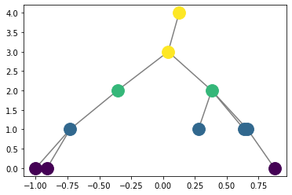
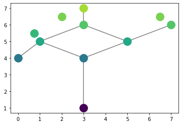
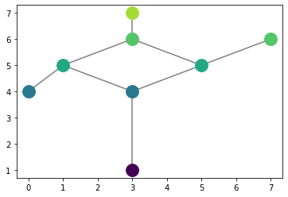
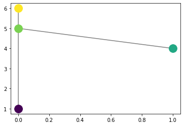

Merge tree tutorials and such
This was stolen from the old ``reeb_plot.ipynb`` files so likely needs editing.
[ ]:
[ ]:
You can also create random merge trees and plot them
[ ]:
from cereeberus.data.randomMergeTrees import randomMerge
from cereeberus.reeb.merge import mergeTree
R = randomMerge(10)
M = mergeTree(R.G, R.fx)
M.plot_reeb()

You can also check if a graph is a merge tree.
This works for both Reeb graphs and Networkx graphs, and it part of the Merge function already
[ ]:
from cereeberus.compute.merge import isMerge
### Reeb Graph
isMerge(R,R.fx)
True
[ ]:
### Networkx Graph
isMerge(R.G,R.fx)
True
To compute a merge tree from a Reeb Graph, we need to first identify any isolates in the graph (nodes with degree 0) and remove them as they will not be going into the merge tree. Looking at a Reeb graph with isolates:
[ ]:
jm = reeb.juggling_man()
jm.plot_reeb()

Then we can remove isolates and plot
[ ]:
jm_im = degree.remove_isolates(jm)
jm_im.plot_reeb()

We then import the computemergetree function, and provide a filtration.
[ ]:
from cereeberus.compute.merge import computeMergeTree
[ ]:
cmt = computeMergeTree(jm_im, verbose=False, precision=1, filter=False)
cmt.plot_reeb()
cmt.fx
{7: 1, 5: 4, 2: 5, 'inf': inf}

We can also compute distances between networkx graphs, reeb graphs, and merge trees. The first example is the graph edit distance, compliments of the networkx package implementation.
[ ]:
from cereeberus.compute import distance
distance.edit(cmt, jm_im)
9.0